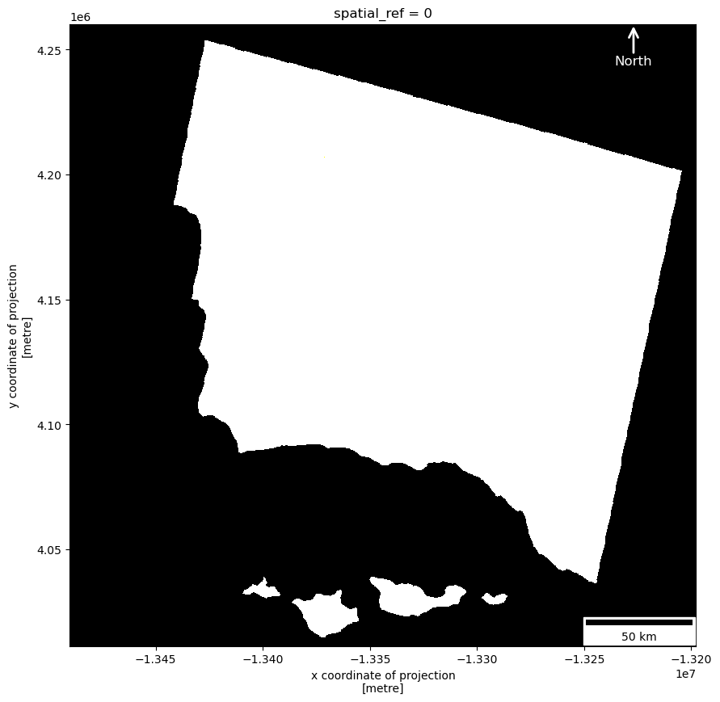
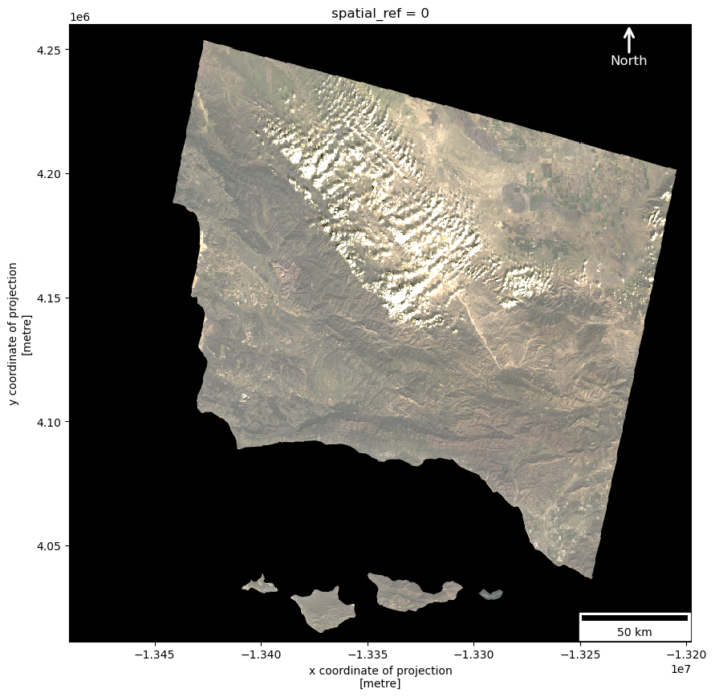
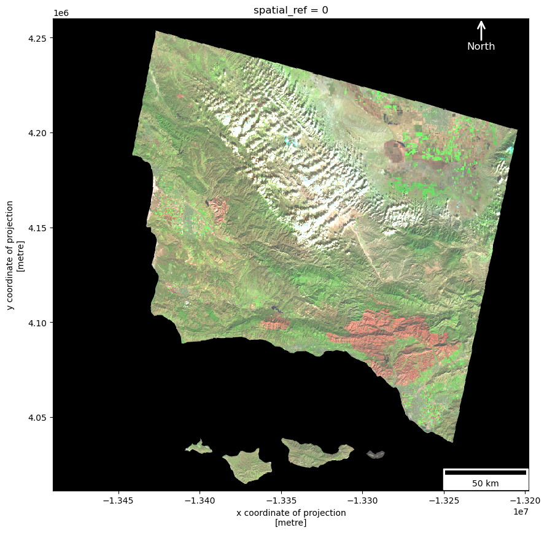

# Import libraries
import os
import numpy as np
import pandas as pd
import matplotlib.pyplot as plt
from matplotlib.lines import Line2D
from matplotlib_scalebar.scalebar import ScaleBar
from matplotlib.patches import FancyArrowPatch
import geopandas as gpd
import xarray as xr
import rioxarray as rioxrVisualizing fire scars through false color - Remote Sensing Analysis
Github Repository:
https://github.com/kpaya/EDS220-hmwk4
Author: Karol Paya
Datasets description
Purpose: The notebook illustrates how remote sensing data can be processed and visualized using Python for environmental analyzes. This work assesses the extent of the damage caused by the Thomas Fire in 2017, using remote sensing data from Landsat satellites.
Highlights: False Color Imaging: The notebook demonstrates the creation of a false color composite using Landsat 8 bands (SWIR22, NIR08, and Red) to highlight fire scars and assess burn severity.
Cloud Handling: The notebook applies a robust scaling to reduce the impact of outliers (such as cloud cover).
Fire Impact Map: By creating visualizations, it is possible to identify areas severely impacted by the fire, including vegetation loss and changes in landscape.
About the Data: The Landsat 8 satellite imagery was sourced from the Microsoft Planetary Computer Data Catalogue. The images provide high-resolution, multispectral data used for detecting changes in vegetation.
The Thomas Fire Perimeter provides the boundaries of the area affected by the fire, this shapefile covers the counties in Ventura and Santa Barbara, California.
References: Microsoft. (2024). Landsat Collection 2 Level-2. Microsoft Planetary Computer Data Catalogue. Retrieved November 14, from https://planetarycomputer.microsoft.com/dataset/landsat-c2-l2
Data.gov. (2024). California fire perimeters (all). CAL FIRE. Retrieved November 14, 2024, from https://catalog.data.gov/dataset/california-fire-perimeters-all-b3436
True color image
Pre-processing Data
# Define the file paths
landsat_fp = '../data/landsat8-2018-01-26-sb-simplified.nc'
shapefile_fp = os.path.join('..', 'data', 'thomas_fire_2017_boundary.shp')
# Read the raster data using rioxarray
landsat = rioxr.open_rasterio(landsat_fp)
# Read the shapefile using geopandas
thomas_fire = gpd.read_file(shapefile_fp)# Convert projection
landsat = landsat.rio.reproject(thomas_fire.crs)
# Verify files have the are the same EPSG
print(f"{'The CRS of landsat is:':} {landsat.rio.crs}")
print(f"{'The CRS of thomas_fire is:':} {thomas_fire.crs}")The CRS of landsat is: EPSG:3857
The CRS of fire_perimeter is: EPSG:3857The projections of the Landsat imagery and the fire perimeter are the same
Data Exploration
# Display the head() of the dataframe to get an overview of the data
landsat.head()<xarray.Dataset> Size: 1kB
Dimensions: (x: 5, y: 5, band: 1)
Coordinates:
* x (x) float64 40B -1.349e+07 -1.349e+07 ... -1.349e+07 -1.349e+07
* y (y) float64 40B 4.26e+06 4.26e+06 4.259e+06 4.259e+06 4.259e+06
* band (band) int64 8B 1
spatial_ref int64 8B 0
Data variables:
red (band, y, x) float64 200B 0.0 0.0 0.0 0.0 ... 0.0 0.0 0.0 0.0
green (band, y, x) float64 200B 0.0 0.0 0.0 0.0 ... 0.0 0.0 0.0 0.0
blue (band, y, x) float64 200B 0.0 0.0 0.0 0.0 ... 0.0 0.0 0.0 0.0
nir08 (band, y, x) float64 200B 0.0 0.0 0.0 0.0 ... 0.0 0.0 0.0 0.0
swir22 (band, y, x) float64 200B 0.0 0.0 0.0 0.0 ... 0.0 0.0 0.0 0.0# Display dimension and coordinates
print("Dimensions of the original raster data:", landsat.dims, landsat.coords)Dimensions of the original raster data: FrozenMappingWarningOnValuesAccess({'x': 889, 'y': 757, 'band': 1}) Coordinates:
* x (x) float64 7kB -1.349e+07 -1.349e+07 ... -1.32e+07 -1.32e+07
* y (y) float64 6kB 4.26e+06 4.26e+06 ... 4.012e+06 4.012e+06
* band (band) int64 8B 1
spatial_ref int64 8B 03-dimensional is not needed, this dimension will need to be removed
# Remove length 1 dimension (band)
landsat = landsat.squeeze()
# Remove coordinates associated to band
landsat = landsat.drop('band')
# Check results
print("Dimensions of the revised raster data:",landsat.dims, landsat.coords)Dimensions of the revised raster data: FrozenMappingWarningOnValuesAccess({'x': 889, 'y': 757}) Coordinates:
* x (x) float64 7kB -1.349e+07 -1.349e+07 ... -1.32e+07 -1.32e+07
* y (y) float64 6kB 4.26e+06 4.26e+06 ... 4.012e+06 4.012e+06
spatial_ref int64 8B 0/var/folders/5l/75rl_f0n5xvcqfryr6n357100000gn/T/ipykernel_9490/4083272801.py:5: DeprecationWarning: dropping variables using `drop` is deprecated; use drop_vars.
landsat = landsat.drop('band')# Check what variables are in the dataset
print("\nVariables in the Dataset:")
print(landsat.data_vars)
Variables in the Dataset:
Data variables:
red (y, x) float64 5MB 0.0 0.0 0.0 0.0 0.0 0.0 ... 0.0 0.0 0.0 0.0 0.0
green (y, x) float64 5MB 0.0 0.0 0.0 0.0 0.0 0.0 ... 0.0 0.0 0.0 0.0 0.0
blue (y, x) float64 5MB 0.0 0.0 0.0 0.0 0.0 0.0 ... 0.0 0.0 0.0 0.0 0.0
nir08 (y, x) float64 5MB 0.0 0.0 0.0 0.0 0.0 0.0 ... 0.0 0.0 0.0 0.0 0.0
swir22 (y, x) float64 5MB 0.0 0.0 0.0 0.0 0.0 0.0 ... 0.0 0.0 0.0 0.0 0.0# Use the .values attribute to retrieve underlying numpy.array
print(type(landsat.values))
print(landsat.values)<class 'method'>
<bound method Mapping.values of <xarray.Dataset> Size: 27MB
Dimensions: (x: 889, y: 757)
Coordinates:
* x (x) float64 7kB -1.349e+07 -1.349e+07 ... -1.32e+07 -1.32e+07
* y (y) float64 6kB 4.26e+06 4.26e+06 ... 4.012e+06 4.012e+06
spatial_ref int64 8B 0
Data variables:
red (y, x) float64 5MB 0.0 0.0 0.0 0.0 0.0 ... 0.0 0.0 0.0 0.0 0.0
green (y, x) float64 5MB 0.0 0.0 0.0 0.0 0.0 ... 0.0 0.0 0.0 0.0 0.0
blue (y, x) float64 5MB 0.0 0.0 0.0 0.0 0.0 ... 0.0 0.0 0.0 0.0 0.0
nir08 (y, x) float64 5MB 0.0 0.0 0.0 0.0 0.0 ... 0.0 0.0 0.0 0.0 0.0
swir22 (y, x) float64 5MB 0.0 0.0 0.0 0.0 0.0 ... 0.0 0.0 0.0 0.0 0.0>Data Exploration Summary
This preliminary exploration assessed the Landsat 8 satellite imagery. The findings are as followed:
Variables in the Dataset
The dataset contains several variables related to different spectral bands from the Landsat 8 satellite, stored as xarray.DataArray objects. These include: - Red (float64) - Green (float64) - Blue (float64) - Near Infrared (NIR08) (float64) - Shortwave Infrared (SWIR 22) (float64)
Coordinate reference system (CRS):
EPSG:32611, this is a projected coordinate reference system.
Dimensions of the data:
The dataset contains a raster grid with dimensions Frozen({‘y’: 731, ‘x’: 870, ‘band’: 1}), we noticed that our raster has an unnecessary extra dimension band. This dimension was removed.
Landsat RGB image
Plotting the red, green, and blue variables to visualize the satellite imagery in true color.
# Create a figure and axis
fig, ax = plt.subplots(figsize = (10, 10))
# Convert to a numpy.array and plot RGB image
landsat[['red', 'green', 'blue']].to_array().plot.imshow(ax = ax)
# Add a Scale Bar
scalebar = ScaleBar(1, location='lower right')
ax.add_artist(scalebar)
# Add North Arrow
arrow = FancyArrowPatch(
(0.9, 0.95), (0.9, 1),
mutation_scale=20,
color='white',
lw=2,
arrowstyle='->',
label='North',
transform=ax.transAxes
)
ax.add_patch(arrow)
# Add a label for "North"
ax.text(0.9, 0.93, 'North', color='white', fontsize=12, ha='center', va='bottom', transform=ax.transAxes)
# Visualize results
plt.show()Clipping input data to the valid range for imshow with RGB data ([0..1] for floats or [0..255] for integers).
After plotting the imagery without robust, the image appears overly bright and saturated (black & white),making it more difficult to extract meaningful information.
Adjust the scale used for plotting the bands to get a true color image
# Create a figure and axis
fig, ax = plt.subplots(figsize = (10, 10))
# Convert to a numpy.array, plot map and adjust robust argument
# Plot RGB image with adjusted scale
landsat[['red', 'green', 'blue']].to_array().plot.imshow(ax = ax, robust = True)
# Add a Scale Bar
scalebar = ScaleBar(1, location='lower right')
ax.add_artist(scalebar)
# Add North Arrow
arrow = FancyArrowPatch(
(0.9, 0.95), (0.9, 1),
mutation_scale=20,
color='white',
lw=2,
arrowstyle='->',
label='North',
transform=ax.transAxes
)
ax.add_patch(arrow)
# Add North Arrow
arrow = FancyArrowPatch(
(0.9, 0.95), (0.9, 1),
mutation_scale=20,
color='white',
lw=2,
arrowstyle='->',
label='North',
transform=ax.transAxes
)
ax.add_patch(arrow)
# Add a label for "North"
ax.text(0.9, 0.93, 'North', color='white', fontsize=12, ha='center', va='bottom', transform=ax.transAxes)
# Display map
plt.show()
The first RGB image (without robust argument adjusted) it is not possible to distiguish the image, it is suggested that the clouds in the bands would likely appear overly bright and saturated since the colormap would stretch to include the reflectance values of the clouds. This could cause the cloud areas to become pure white and dominate the image.
Once we set robust=True, the color scaling was adjusted to exclude extreme values, such as the high reflectance of clouds in the bands. This means that while clouds will still be visible in the image, but they will not dominate the entire color scale. This made it possible to interpret the image.
False color image
from matplotlib.patches import Arrow
# Create a figure and axis
fig, ax = plt.subplots(figsize = (10, 10))
# Select short wave infrared, near- infrared and red variables
# Convert to a numpy.array, plot map and adjust robust argument
landsat[['swir22', 'nir08', 'red']].to_array().plot.imshow(ax = ax, robust = True)
# Add a Scale Bar
scalebar = ScaleBar(1, location='lower right')
ax.add_artist(scalebar)
# Add North Arrow
arrow = FancyArrowPatch(
(0.9, 0.95), (0.9, 1),
mutation_scale=20,
color='white',
lw=2,
arrowstyle='->',
label='North',
transform=ax.transAxes
)
ax.add_patch(arrow)
# Add a label for "North"
ax.text(0.9, 0.93, 'North', color='white', fontsize=12, ha='center', va='bottom', transform=ax.transAxes)
# Display map
plt.show()
False Color Image & Thomas Fire Perimeter Map
# Create a figure and axis
fig, ax = plt.subplots(figsize = (10, 10))
# Plot the false color image (SWIR, NIR, Red bands)
landsat[['swir22', 'nir08', 'red']].to_array().plot.imshow(ax = ax, robust=True)
# Plot the Thomas Fire boundary
thomas_fire.boundary.plot(ax = ax, edgecolor='yellow', linewidth=0.5, label="Thomas Fire Boundary")
# Add title
ax.set_title("2017 Thomas Fire: The Fire Scars\n Ventura & Santa Barbara Counties, California", fontsize=16)
# Create custom legend entries for both boundary and burnt areas
legend_elements = [
Line2D([0], [0], color='yellow', lw=2, label='Thomas Fire Boundary'),
Line2D([0], [0], color='lightcoral', lw=3, label='Burnt Areas')
]
# Add the custom legend to the map
ax.legend(handles=legend_elements, loc='upper left', fontsize=12)
# Add a Scale Bar
scalebar = ScaleBar(1, location='lower right')
ax.add_artist(scalebar)
# Add North Arrow
arrow = FancyArrowPatch(
(0.9, 0.95), (0.9, 1),
mutation_scale=20,
color='white',
lw=2,
arrowstyle='->',
label='North',
transform=ax.transAxes
)
ax.add_patch(arrow)
# Add a label for "North"
ax.text(0.9, 0.93, 'North', color='white', fontsize=12, ha='center', va='bottom', transform=ax.transAxes)
# Add grids
ax.grid(True, which='both', color='gray', linestyle='--', linewidth=0.5)
# Add captions
fig.text(0.5, 0.05, 'Source: Microsoft Planetary Computer Data Catalogue', ha='center', va='center', fontsize=10, color='black')
fig.text(0.5, 0.01, 'Landsat (SWIR, NIR, and Red Bands)', ha='center', va='center', fontsize=10, color='black')
# Display the map
plt.show()
To show the impact of the 2017 Thomas Fire, the false color composite of the Landsat 8 satellite imagery was processed. The composite is created by combining the shortwave infrared (SWIR), near-infrared (NIR), and red spectral bands.
Vegetation appears in shades of green and burned areas are highlighted in a light red tone. The Thomas Fire perimeter, shown in a yellow line, indicates the boundaries of the fire. This boundary helps to highlight the areas affected by the fire and offers insight into the extent of the damage.
The use of a false color composite is particularly effective for distinguishing burned areas and vegetation, making it a valuable tool for post-fire analysis and monitoring vegetation recovery.